Word embeddings for natural language processing
Outline
- Introduction
- Applications of word embeddings
- Language models
- count-based
- prediction-based (NN-based)
- Neural network language models
- Word2vec
- Context window
- Architectures
- Cbow
- Skipgram
- Optimizations
- Hierarchical Softmax
- Negative Sampling
- Implementation
- Limitations
- Extensions
- Doc2vec
- FastText
Word Embeddings
- Analogy tasks: Paris is to France as Berlin is to what?
- Find the word that does not fit:
dinner cereal breakfast lunch
Word Embeddings
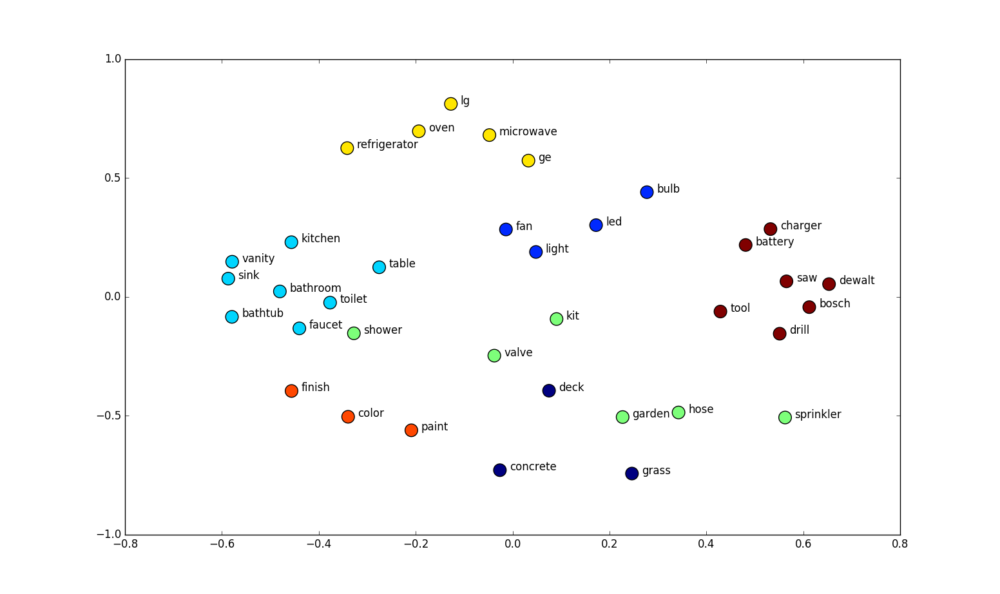Applications
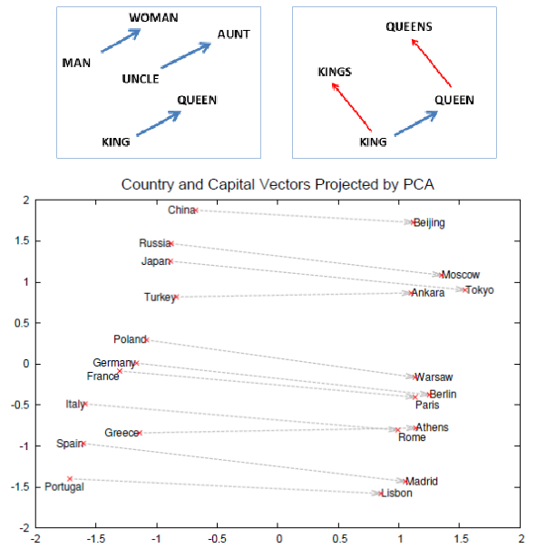Distributed Representations of Words and Phrases and their Compositionality (Mikolov 2013)
Applications
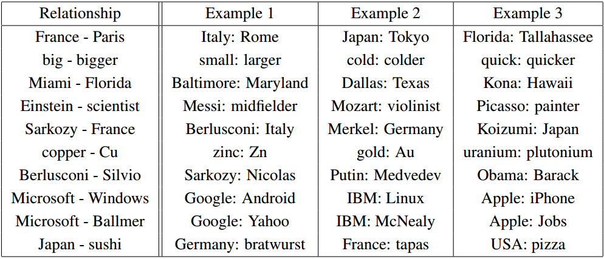Efficient Estimation of Word Representations in Vector Space (Mikolov 2013)
Applications
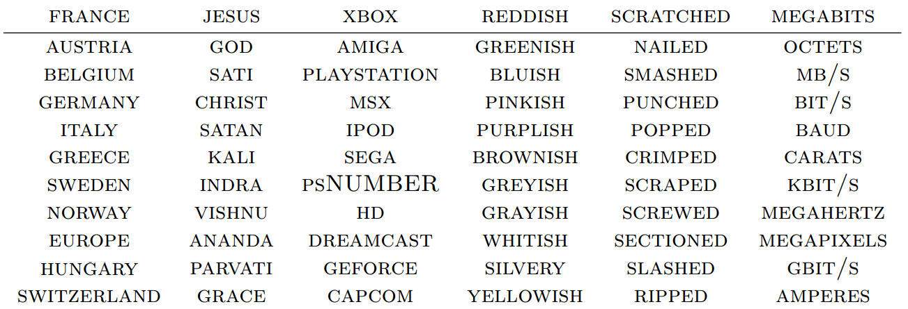Natural Language Processing (almost) from Scratch (Collobert and Weston 2011)
Applications
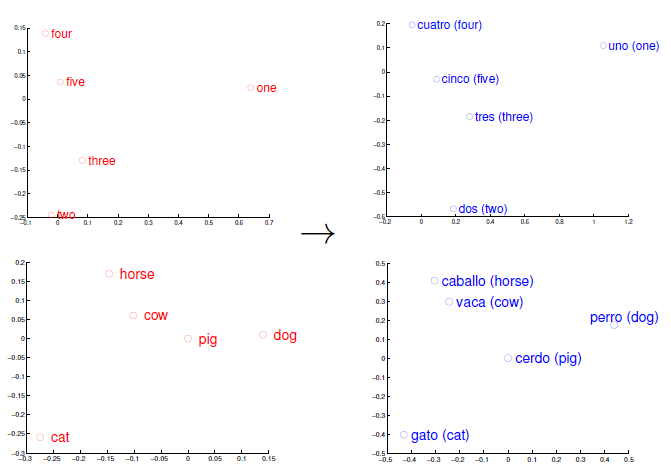Exploiting Similarities among Languages for Machine Translation (Mikolov 2013)
Applications
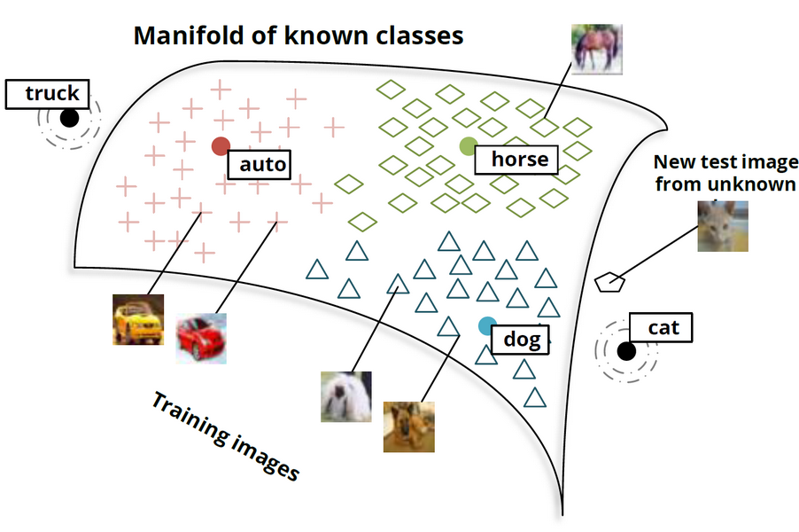Zero-Shot Learning Through Cross-Modal Transfer (Socher 2013)
Bag-of-words, TF-IDF and LSA
$x_{i,j} = TFIDF(t_i, d_j)$
$TFIDF(t_i, d_j) = TF(t_i, d_j) ⋅ IDF(t_i, d_j)$
$TF(t_i, d_j) = \frac{freq(t_i, d_j)}{|d_j|}$
$IDF(t_i, d_j) = log(\frac{|D|}{|\{d_k : t_i ∈ d_k\}|})$
Bag-of-words and TF-IDF
Doc1 = "He is a lazy boy. She is also lazy."
Doc2 = "John is a lazy person."
Raw frequencies
| Doc1 | Doc2 | |
| a | 1 | 1 |
| also | 1 | 0 |
| boy | 1 | 0 |
| he | 1 | 0 |
| is | 2 | 1 |
| john | 0 | 1 |
| lazy | 2 | 1 |
| person | 0 | 1 |
| she | 1 | 0 |
TF-IDF
| Doc1 | Doc2 | |
| a | 0 | 0 |
| also | 0.077 | 0 |
| boy | 0.077 | 0 |
| he | 0.077 | 0 |
| is | 0 | 0 |
| john | 0 | 0.138 |
| lazy | 0 | 0 |
| person | 0 | 0.138 |
| she | 0.077 | 0 |
Latent Semantic Analysis: decomposition through SVD
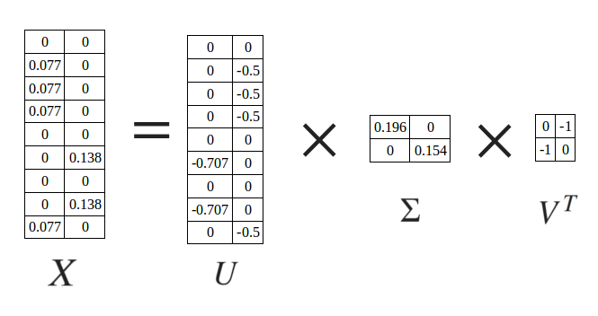Language models
Given vocabulary $V$,
approximate a conditional distribution over words:
$$ P(W_o | W_i), W_i \in V, W_o \in V$$
$$ P(W_{i+1} | {W_{i-n}, ..., W_{i-1}, W_i}), W_j \in V, j \in \mathbb{N} $$
Distributional hypothesis
The cat is walking in the bedroom
A dog was running in a room
Count-based language models
- N-grams
- co-occurrence count on training set
- Probability smoothing
- The amount of data required grows exponentially with the size of the context
Neural network language models
- Distributed representations
- Embeddings are represented by the activation pattern of the hidden layer as a whole
- Words with similar meanings are represented by vectors that are close in the high-dimensional space
Neural network language models
- Bengio 2003
- Morin, Bengio 2005
- Collobert, Weston 2008 (CNNs)
- Mnih, Hinton 2009 (HLBL)
- Mikolov 2012 (RNNs)
- Mikolov 2013 (word2vec)
- Mnih, Kavukcuoglu (vLBL, ivLBL) 2013
- Pennington, Socher 2014 (GloVe)
Word2vec
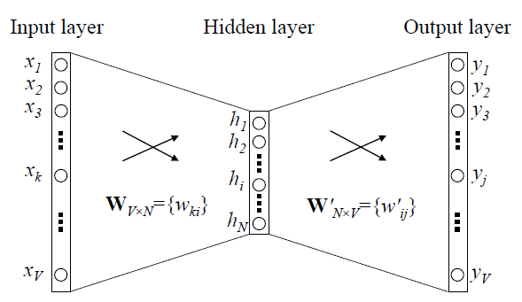Word2vec
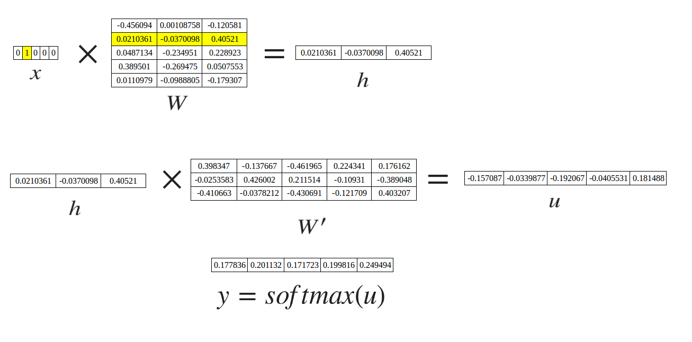Sliding window
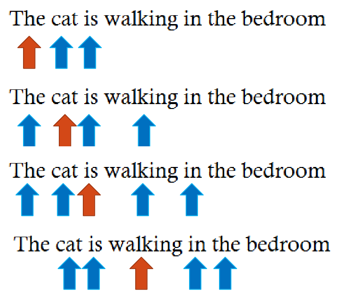Architectures
|
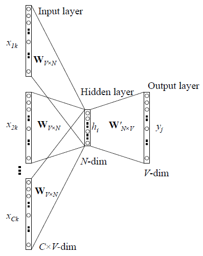
|
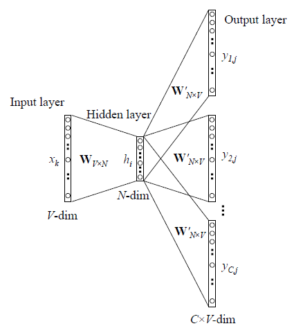
|
Word2vec
Output probabilities are modeled using the softmax function
$x = [x_1, x_2, ..., x_n]$
$$softmax(x_i) = \frac{e^{x_i}}{\sum_{j}{e^{x_j}}}$$
Cross-entropy is used as loss
$E(y,t) = - \sum_{m=1}^{V}{t_m \cdot log(y_m)} = - log(y_o)$
Word2vec
Given an input word $W_k$ and an output word $W_j$ in the context of $W_k$,
let $x$ be the one-hot representation for $W_k$
$x = [x_1, x_2, ..., x_k, ...,x_V], x_k = 1, x_n = 0, n \neq k$
$t = [t_1, t_2, ..., t_j, ...,t_V]$
$t_j = 1$
$t_n = 0, n \neq j$
Word2vec
activation $h = x^TW = W_{(k, :)} := v_{w_i}$
score $u_j = {v'}_{w_j}^{T} ⋅ h$, where ${v'}_{w_j}^{T} = {W'}_{(:,j)}$
$P(w_j | w_i) = y_j = \frac{exp(u_j)}{\sum_{j'=1}^{V}{exp(u_{j'})}}$
Word2vec
$E(y,t) = - \sum_{m=1}^{V}{t_m \cdot log(y_m)} = - log(y_o)$
$\frac{∂E}{∂{w'}_{ij}} = \frac{∂E}{∂u_j} ⋅ \frac{∂u_j}{∂{w'}_{ij}} = (y_j - t_j) ⋅ h_i$
${v'}_{w_{ij}}^{new} ← {v'}_{w_{ij}}^{old} - η ⋅ (y_j - t_j) ⋅ h_i$
$\frac{∂E}{∂w_{ki}} = \sum_{j=1}^{V}{(\frac{∂E}{∂u_j} ⋅ \frac{∂u_j}{∂h_i})} ⋅ \frac{∂h_i}{∂w_{ki}} = \\ = \sum_{j=1}^{V}{((y_j - t_j) ⋅ w'_{ij})} ⋅ x_k$
$v^{(new)}_{ki} ← v^{(old)}_{ki} - η ⋅ \sum_{j=1}^{V}{((y_j - t_j) ⋅ w'_{ij})} ⋅ x_k$
Neural network language models
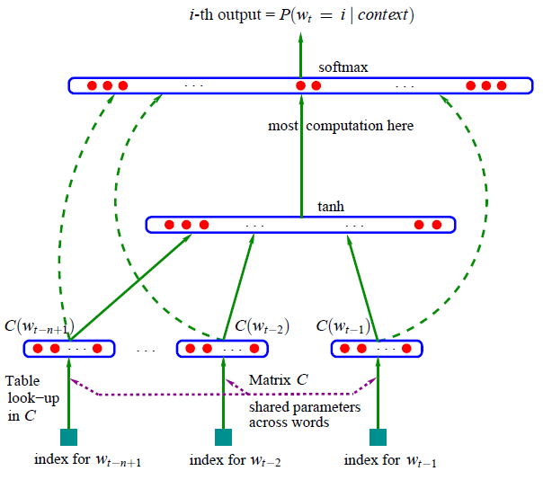A Neural Probabilistic Language Model (Bengio 2003)
Optimizations
- Hierarchical Softmax
- Negative Sampling
Hierarchical Softmax
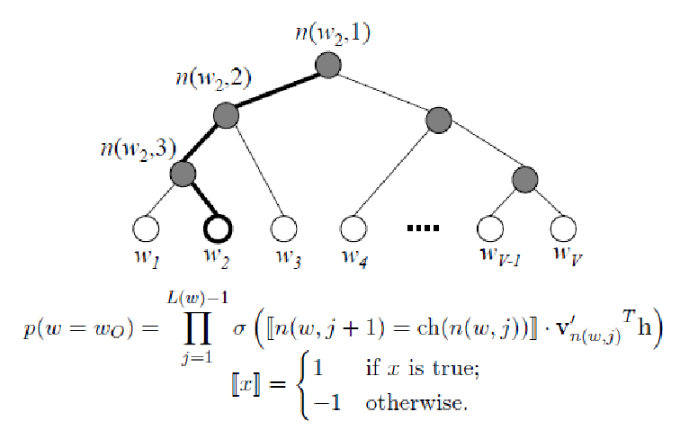- $h$ = hidden layer activation
- $n(w,j)$ = jth node in the path of $w$
- $ch(n(w, j))$ = left child of $n(w,j)$
- $v'_{n(w,j)}$ = output neuron corresponding to $n(w,j)$
Hierarchical Softmax
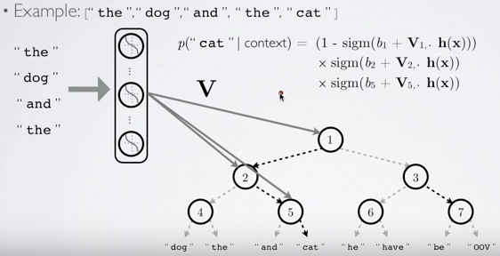Hierarchical Softmax, Huffman tree

Hierarchical Softmax
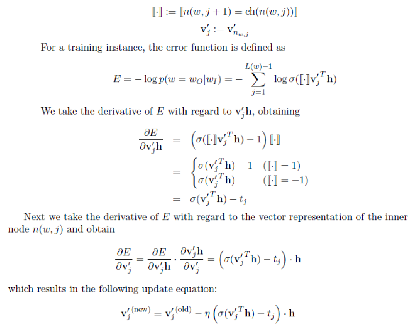Negative Sampling
- Pick up K incorrect words
- Maximize the probability of picking the right word
- Minimize the probability of picking incorrect words
- Pick negative samples with probability proportional to their frequency, raised to the 3/4 power
- Unlike Hierarchical softmax, the output layer does not model a probability distribution
Negative Sampling
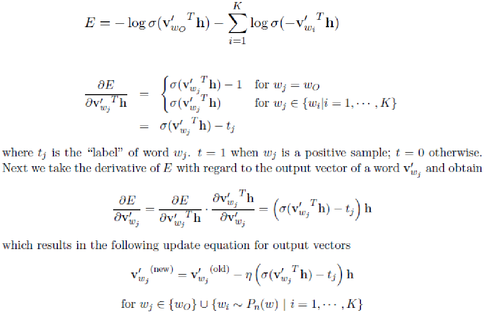Implementation
$ ./word2vec
-train data.txt
-output vectors.txt
-size 200
-window 5
-cbow 1
-hs 0
-negative 5
-sample 1e-4
-alpha 0.0025
-min-count 10
- min-count: minimum frequency a words needs to have, otherwise it is discarded (default=5)
- sample: coefficient to discard frequent words, with probability proportional to their frequency (default = 0, 1e-5 is a good value)
In the paper: $P(w_i) = 1 - \sqrt{\frac{sample}{f(w_i)}}$
In the code: $P(w_i) = 1 - \big({\sqrt{\frac{sample \cdot |V|}{f(w_i)}} + \frac{sample \cdot |V|}{f(w_i)}}\big)$
Multi-words terms
$ ./word2phrase -train text.txt -output phrases.txt -threshold 100 -min-count 10
Join two adjacent words with an underscore if their joint score is higher than threshold:
$score(w_i, w_j) = \frac{(count(w_i, w_j) - min\_count) \times |V|}{count(w_i) \times count(w_j)}$
Limitations
- Out-of-vocabulary words
- Ambiguity
- Temporal ordering
Extensions
Doc2Vec

Distributed Representations of Sentences and Documents (Le and Mikolov 2014)
FastText
- Word vectors are composed by character n-grams
- Vectors for out-of-vocabulary words can be approximated from the character n-gram vectors
- Better for syntactic tasks and highly-inflected languages
FastText, out-of-vocabulary words
The cat is walking in the bedroom
$\{the, cat, is, walking, wal, walk, walki, alk, alki, alkin, ..., \\ in, the, bedroom, bed, bedr, bedro, edro, edroo, ...\}$
FastText, out-of-vocabulary words
$ ./fasttext
skipgram
-input text8
-output text8_model
-epoch 1
-lr 0.5
-minn 2
-maxn 5
-dim 300
$ ./fasttext nn text8_model.bin
Query word? gearshift gearing 0.790762 flywheels 0.779804 flywheel 0.777859 gears 0.776133 driveshafts 0.756345 driveshaft 0.755679 daisywheel 0.749998 wheelsets 0.748578 epicycles 0.744268 gearboxes 0.73986
FastText, supervised training for text classification
__label__sauce __label__cheese how much does potato starch affect a cheese sauce recipe __label__food-safety __label__acidity dangerous pathogens capable of growing in acidic environments __label__cast-iron __label__stove how do i cover up the white spots on my cast iron stove __label__restaurant michelin three star restaurant; but if the chef is not there __label__knife-skills __label__dicing without knife skills how can i quickly and accurately dice vegetables __label__storage-method __label__equipment __label__bread whats the purpose of a bread box __label__baking __label__food-safety __label__substitutions __label__peanuts how to seperate peanut oil from roasted peanuts at home __label__chocolate american equivalent for british chocolate terms __label__baking __label__oven __label__convection fan bake vs bake __label__sauce __label__storage-lifetime __label__acidity __label__mayonnaise regulation and balancing of readymade packed mayonnaise and other sauces
FastText, supervised training for text classification
$ ./fasttext
supervised
-input cooking.train
-output model_cooking
-lr 1.0
-epoch 5
-wordNgrams 2
$ ./fasttext predict-prob model_cooking.bin - 5
Query: Why not put knives in the dishwasher?
__label__knives 0.335938 __label__equipment 0.0664063 __label__food-safety 0.0664063 __label__cleaning 0.0605469 __label__storage-method 0.0332031